Probability and
multivariate Gaussians
Start with outcomes and events. Build distributions, expectations, and covariance, then see how a Gaussian turns those ideas into geometry and prediction.
In the CNN training chapter, probability described a dropout mask and statistics described a batch of activations. Here those ideas become a language for modeling data itself. We will distinguish what a random quantity can do, how its uncertainty is described, and what changes after observing related information.
The chapter combines the probability refresher and the multivariate-Gaussian continuation. It includes the distribution table, handwritten identities, Gaussian operations, and the distinction between marginal and conditional distributions. The next lecture starts regression and Gaussian classification; parameter estimation for those models belongs to the next chapter.
What you should be able to do afterward
- Distinguish outcomes, events, random variables, probability masses, densities, and CDFs.
- Calculate joint, marginal, and conditional quantities and apply Bayes' rule.
- Derive expectations, variances, covariance identities, and the moments of the lecture's distribution families.
- Read the Gaussian density using matrix dimensions, covariance, determinants, and Mahalanobis distance.
- Derive Gaussian marginals, conditionals, affine transformations, sums, products of density functions, and the canonical parameterization.
- Identify when independence, positive definiteness, finite moments, or joint Gaussianity is actually required.
Reading route: sections 1–5 establish the probability language; 6–8 build moments and covariance; 9–15 develop Gaussian models. Section 16 connects the ideas to later ML methods. The chapter is intentionally substantial: use the checkpoints to stop after one coherent piece rather than trying to memorize all formulas at once.
Contents · choose a section
What changes when you learn something?
Build the language of uncertainty, then use one small table to distinguish a joint event, a marginal probability and a conditional probability.
Follow the examples, then open each full explanation. The controls apply to sections 1–5.
P(A): how probable is event A? · X: a random variable · x: one value it can take · “| B”: after restricting to context B.
p is a probability mass, f a density and F a cumulative probability. Their meanings are introduced at the point of use.
1. Why the lecture returns to probability
Lecture connection: the opening ML terminology, problem-type, and method-summary slides.
Probability gives a model a language for uncertain outcomes. Start by separating an observed dataset from the distribution it may help us estimate.
An observed dataset contains particular cases. A probability model describes possible outcomes and the probabilities assigned to events.
Our running example asks whether a journey is rainy (R=1) and whether it is late (L=1). A joint model describes both; conditioning will express what knowing one tells us about the other.
Lecture context ML vocabulary, task types and the method map
An example is one observed instance. Its features describe the information available to a model; its target, label, or response is what a supervised model should predict. Regression predicts numerical quantities; classification predicts categories. A model can also learn structure without a supplied target, as in clustering, factor models, or dimensionality reduction. Reinforcement learning instead involves actions and rewards over interactions.
Parameters are learned quantities inside a model. Model selection chooses among model families or settings; regularization restricts or discourages certain fitted behaviors. Feature creation and selection change the representation on which learning operates. Training error measures fit on the data used to learn; test error estimates performance on held-out data under the evaluation setup. Generalization concerns behavior beyond the training examples. Cross-validation is a procedure for assessing choices through repeated training/validation splits.
The opening slides place linear/logistic regression, neural networks, trees, Bayes models, margin methods, nearest neighbors, ensembles, and matrix-factorization methods on the same map. They are a recap, not separate derivations in this lecture. Probability supports several of them by describing uncertainty, assumptions about data, and what observations imply about unobserved quantities.
It also supports tasks beyond class labels: density estimation describes where data are likely; anomaly detection looks for unusual observations; missing-data methods reason about unobserved entries; time-series models describe dependence over time. Calibration concerns whether predicted probabilities match observed frequencies. Recommender systems may combine these ideas with learned representations. These are application connections; each needs assumptions appropriate to its own task.
Two different objects: a distribution is a mathematical description of uncertainty. A finite dataset is a set of observations. Its average or histogram can estimate features of a distribution, but the estimate and the underlying quantity are not the same object.
2. Outcomes, events, and random variables
Lecture connection: die rolls, sample spaces, events, probability axioms, and the random-variable definition.
An outcome is one possible result. An event collects results. A random variable assigns a number to each result.
- Outcome ω
- One result, such as rolling a 4.
- Event A
- A set of outcomes, such as {2,4,6}.
- Random variable X
- A numerical function of the outcome, such as the number of heads.
Lecture core Probability axioms, complements and overlapping events
An experiment has a sample space Ω: the set of possible outcomes. A single outcome is denoted ω. An event is a subset of Ω. For a die, Ω={1,2,3,4,5,6}; “an even face” is the event {2,4,6}.
A probability rule maps events to numbers. It assigns nonnegative probabilities, gives the whole space probability 1, and adds probabilities over disjoint events. More precisely, for pairwise disjoint events \(A_1,A_2,\ldots\):
It follows that \(P(\varnothing)=0\), \(P(A^c)=1-P(A)\), and \(P(A\cup B)=P(A)+P(B)-P(A\cap B)\). The last subtraction prevents the intersection from being counted twice.
The familiar favorable-outcomes/total-outcomes formula is valid for a finite equally likely sample space. It is not the definition for every experiment. Long-run relative frequencies provide an interpretation and estimation method under suitable repetition assumptions; they do not require every possible outcome to be equally likely.
Work through two fair, independent coin tosses
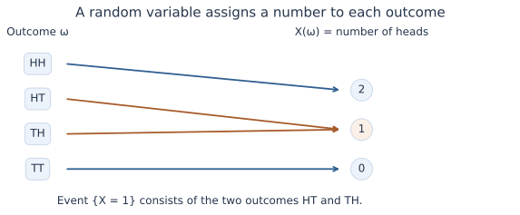
- There are four equally likely ordered outcomes: HH, HT, TH, TT. Each has probability 1/4.
- Let X count heads: HH → 2; HT and TH → 1; TT → 0.
- The event X=1 contains two outcomes, so P(X=1)=1/4+1/4=1/2.
Notation The mapping X and the event X=x
A random variable maps outcomes to numbers
A real-valued random variable is a function \(X:\Omega\to\mathbb R\). For two coin tosses, let X count heads. HH maps to 2, HT and TH map to 1, and TT maps to 0. The event {X=1} is shorthand for the outcomes whose assigned value is 1.
Uppercase X names the random variable; lowercase x names a possible realized value. \(P(X=x)\) means the probability of the event consisting of outcomes that produce x. Different random variables can be defined on the same experiment.
Now change the assumption: each toss independently has head probability 3/4. Is P(X=1) still 1/2? Work from the outcomes.
Check your reasoning
No. P(HT)=(3/4)(1/4)=3/16 and P(TH)=(1/4)(3/4)=3/16. These disjoint outcomes give P(X=1)=3/8. Independence permits the products; equal likelihood no longer holds across the four outcomes.
Common mistake: counting two favorable outcomes out of four without checking equal probabilities.
3. Mass, density, and a CDF that covers both
Lecture connection: discrete, continuous, and mixed random variables; PMFs, PDFs, and CDFs.
Choose the right object before calculating: a mass at a point, an area under a density, or an accumulated probability.
Nonnegative masses add to one. Add the masses of the values in your event.
The integral accumulates area over the interval. The density is nonnegative and its total area is one.
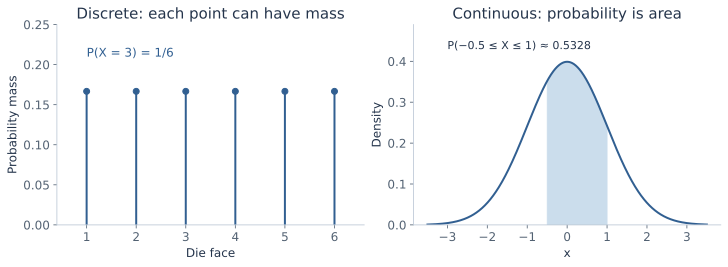
Shaded interval: width 0.06 × height 5 = probability 0.30.
A density value is not a point probability. A single point has zero probability in this setting, while the density there can be positive or greater than 1. For a uniform distribution on [0,0.2], the density is 5 and the probability of [0.04,0.10] is \(5(0.10-0.04)=0.30\).
Lecture core PMFs, PDFs, normalization and small-interval notation
Discrete: attach probability to points
For a countable set of possible values, the probability mass function is \(p_X(x)=P(X=x)\). It is nonnegative and sums to one. For a fair die, each face has mass 1/6. For the two-coin count with independent fair tosses, the masses at 0,1,2 are 1/4,1/2,1/4.
Continuous with a density: probability is area
An absolutely continuous distribution has a probability density \(f_X\) such that:
For a small interval of width Δx and a sufficiently smooth density, \(P(x\le X\le x+\Delta x)\approx f_X(x)\Delta x\). The exact finite-interval statement is the integral. The lecture's infinitesimal notation is a useful intuition, not an instruction to substitute a density for a probability.
The CDF \(F_X(x)=P(X\le x)\) applies to every real-valued random variable. It is nondecreasing and right-continuous, approaches 0 toward −∞ and 1 toward +∞, and satisfies:
Keep the interval endpoints in view
For the fair two-toss head count, F(0)=1/4 and F(1)=3/4. Therefore P(0<X≤1)=3/4−1/4=1/2. Including zero instead gives P(0≤X≤1)=3/4. The endpoint matters because zero has positive mass.
Lecture core CDF jumps, continuity and the density connection
The cumulative distribution function
For a discrete variable, the CDF jumps at values with positive mass. For a variable with a density, \(F_X(x)=\int_{-\infty}^xf_X(t)\,dt\); differentiating recovers f where appropriate. We use the conventional ≤ definition. The source's occasional strict-< notation makes no difference for a density, but does matter at an atom.
As x increases, the event X≤x contains more outcomes, so F cannot decrease. Right-continuity means approaching x from larger values approaches F(x). At a jump, F(x) already includes the probability at x because the definition uses ≤.
In the lecture-aligned example below, an atom puts probability 0.3 at zero; a continuous component spreads the remaining 0.7 across (0,1). A single ordinary density cannot describe the atom.
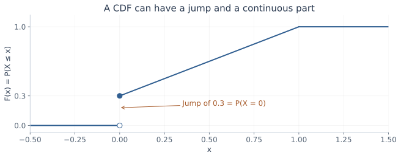
Lecture core Read the complete mixed CDF and its point mass
Mixed: a point mass plus a continuous part
Suppose X is 0 with probability 0.3, and with probability 0.7 it is drawn uniformly from (0,1). Its CDF is:
The continuous density part is 0.7 on (0,1), with total mass 0.7. The remaining 0.3 sits at zero. An ordinary density alone cannot represent that atom. A mixed distribution is not the same as a singular distribution; the lecture focuses on the discrete, density, and mixed cases.
For that mixed example, F(0)=0.3 and F(0.5)=0.65. Complete P(0<X≤0.5)=____. What changes if zero is included?
Check your reasoning
Subtract F(0): 0.65−0.30=0.35. Including zero adds its atom 0.30, so P(0≤X≤0.5)=0.65. A CDF difference F(b)−F(a) excludes a and includes b.
Check the distinction: the uniform density height 5 is allowed even though event probabilities cannot exceed 1.
4. Joint, marginal, and conditional distributions
Lecture connection: joint distributions, factorization under independence, and conditional density normalization.
Marginalize by collecting possibilities. Condition by selecting a context and renormalizing. Reversing the context changes the question.
- Joint
- What fraction of all cases has both properties?
- Marginal
- What fraction has one property, after summing over the other?
- Conditional
- Within a specified context of positive probability, what fraction has the property?
| Weather | Late L=1 | On time L=0 | Total |
|---|---|---|---|
| Rain R=1 | 18 | 12 | 30 |
| Dry R=0 | 7 | 63 | 70 |
| Total | 25 | 75 | 100 |
Restrict to B, then divide the overlap by the probability of B. For late given rain, the denominator is 30/100; for rain given late, it is 25/100.
Lecture core Joint distributions, marginalization and integration
A joint distribution describes variables together
For discrete X and Y, \(p_{X,Y}(x,y)=P(X=x,Y=y)\). A joint table can be reduced to a marginal by summing out the other variable: \(p_X(x)=\sum_yp_{X,Y}(x,y)\). With a joint density, integrate instead:
Marginalization averages over possibilities for the unobserved variable. It does not select one particular value of it.
Lecture core Continuous conditioning normalizes a density slice
Conditioning selects a context and renormalizes
For events A,B with \(P(B)>0\), define \(P(A\mid B)=P(A\cap B)/P(B)\). In a table, restrict attention to the B part and divide by its total mass. For a joint density with \(f_Y(y)>0\), the corresponding conditional density is:
The denominator integrates over the variable being predicted, holding the observed value fixed. It normalizes a slice into a density in x. This formula does not divide by \(P(Y=y)\), which is zero for an ordinary continuous Y. Conditional densities provide the appropriate continuous formulation.
Read the dummy variable: u runs over possible values of X while y is fixed. The denominator is the marginal density of the observed Y value.
For discrete variables, every joint probability must equal the product of its marginals. Here 0.18 ≠ 0.30×0.25=0.075, so rain and lateness are dependent in this invented table.
Lecture core Factorization, unchanged conditionals and disjoint events
Independence is a factorization property
Independent variables have \(p_{X,Y}(x,y)=p_X(x)p_Y(y)\), or the analogous density factorization. Conditioning on one then leaves the other's distribution unchanged wherever the conditional expression is defined. Independence is stronger than zero covariance. It is also different from disjoint events: two disjoint events with positive probabilities have intersection probability zero, so they cannot be independent.
Bayes’ rule: express the same overlap in either direction
Prior P(A): before observing B · likelihood P(B | A): evidence under A · evidence P(B): normalizer · posterior P(A | B): after observing B.
- Start with rain: P(R=1)=30/100=0.30.
- Use late given rain: P(L=1 | R=1)=18/30=0.60. Multiply to recover the joint: 0.30×0.60=0.18.
- Find all late cases: 18+7=25, so P(L=1)=0.25.
- Reverse the context: P(R=1 | L=1)=0.18/0.25=0.72. This differs from 0.60 because the denominator has changed.
Derive the denominator Total probability: enumerate disjoint ways to be late
Rain and dry form a partition: exactly one occurs. The late event can therefore be separated into late-and-rain and late-and-dry, which do not overlap.
The two contributions are (18/30)(30/100)=0.18 and (7/70)(70/100)=0.07. Add them: P(L=1)=0.25. Bayes then uses this total as its normalizer.
Bayes' rule is the joint distribution written two ways
The density version has the same structure. In ML language, a prior and a likelihood combine into a posterior after normalization. Reversing a conditional generally changes its value; Bayes' rule tells you exactly how the marginal probabilities enter that reversal.
Without looking at the table: why do P(late | rain) and P(rain | late) share a numerator but use different denominators?
Check your reasoning
Both count the same intersection: the 18 rainy-and-late cases. The first conditions on the 30 rainy cases; the second on the 25 late cases. Thus the ratios are 18/30 and 18/25.
Say the context first: “Among rainy journeys…” versus “Among late journeys…”.
5. Explore conditioning in a small joint table
Predict a result before moving a control. Use the output to check the denominator and the assumptions you chose.
Enter nonnegative counts or weights with a positive total. Marginals sum cells; conditionals divide by the selected context’s total. A zero context makes that conditional undefined.
The following numbers are an invented example, not measured data. Think of two binary variables: rain R and lateness L. Enter nonnegative counts; the tool divides them by their total. The initial table has 18 rainy/late, 12 rainy/on-time, 7 dry/late, and 63 dry/on-time cases.
- Predict P(late | rain) and P(rain | late) for the starting table.
- Try the independent-example button. Check its current marginals before comparing their product with the joint.
- Reset, then set both rainy counts to zero. Which conditional becomes undefined? Which reverse conditional is still defined?
Explore Open the joint-probability workbench
Joint-probability workbench
| Late L=1 | On time L=0 | Row total | |
|---|---|---|---|
| Rain R=1 | |||
| Dry R=0 | |||
| Column total |
A conditional with a zero conditioning total is undefined, not zero. Fractional counts are allowed as nonnegative weights; their ratios define the same finite probability model.
Worked feedback Default results and the zero-context case
Initially, \(P(R=1)=0.30\), \(P(L=1)=0.25\), and \(P(R=1,L=1)=0.18\). Hence \(P(L=1\mid R=1)=18/30=0.60\), while \(P(R=1\mid L=1)=18/25=0.72\). Under independence, the joint probability would instead be \(0.30\cdot0.25=0.075\).
After setting both rainy counts to zero while keeping dry counts 7 and 63, P(late | rain) is undefined because the rain total is zero. P(rain | late)=0/7=0 is defined. The denominator, rather than the numerator alone, decides whether conditioning is possible.
Complete an independent model with the same marginals P(rain)=0.30 and P(late)=0.25. What must P(rain and late) be? Is that the initial table’s value?
Check your reasoning
Independence requires 0.30×0.25=0.075. The starting joint value is 0.18, so it is not independent. Checking one discrepant cell disproves independence; checking one matching cell is not a general test for variables with larger supports.
Rebuild the argument in six moves
Ω is the sample space; an event is a subset. X maps outcomes to numerical values. Counting favorable outcomes requires equal likelihood.
A PMF gives point probabilities and sums to one. A PDF gives density heights and integrates to one. Interval probability is area.
A jump gives the probability at that point. The left endpoint is excluded in this difference.
Marginalize by summing/integrating out the other variable. Condition by fixing the context and dividing by its probability or density where positive.
Posterior = likelihood × prior / evidence. Derive the evidence by summing disjoint joint cases. Continuous conditioning uses density normalization, not division by a zero point probability.
Factorization must hold throughout the joint model. Disjoint positive-probability events are dependent. Zero covariance alone does not establish independence.
Explain it before reopening the notes
Try these on paper or aloud. Check the method, conditions and interpretation after your attempt.
- For two independent coins with P(head)=3/4, derive P(exactly one head). Why is simple outcome counting insufficient?
- A uniform density on [0,0.2] has height 5. Find P(0.04≤X≤0.10) and P(X=0.10).
- For the atom-plus-uniform example, compare P(0<X≤0.5) with P(0≤X≤0.5).
- Using the 18/12/7/63 table, derive P(rain | late) through Bayes and total probability.
- Can two disjoint events of positive probability be independent? Explain with the factorization rule.
- In a conditional density f(X | Y=y), what is held fixed and what is integrated in its denominator?
Review answers and reasoning
- HT and TH each have probability 3/16, so the total is 3/8. Outcomes are not equally likely; independence justifies multiplication.
- Interval probability is 5×0.06=0.30. A single point has probability zero for this absolutely continuous distribution.
- Excluding zero gives 0.35; including its atom gives 0.65.
- Evidence: 0.60×0.30+0.10×0.70=0.25. Posterior: 0.60×0.30/0.25=0.72.
- No. Their intersection has probability zero, while the product of their two positive probabilities is positive.
- Hold y fixed; integrate the joint density over all candidate x values (using a dummy variable such as u). The result is f_Y(y), required positive for this ratio.
Self-check: did you name the reference population, state the needed assumption, and interpret the result? Reopen only the explanation connected to the step you missed.
Save your progress or a return date
These are your own reports. Opening a page or answer does not establish mastery.
Choose a suggested return gap after trying the questions.
Next: summarize a distribution with expectation and variance, then connect them through covariance. Back to this block’s controls ↑
How do you summarize uncertainty?
Use probabilities as weights. Separate an average from spread, derive the distribution formulas, then collect variation in a covariance matrix.
These controls apply to sections 6–8 only.
E: average using a distribution’s probabilities · μ: mean · Var: variance · σ: standard deviation · Cov: covariance · Σ: covariance matrix.
We use finite expectations for the ordinary mean identities and finite second moments for variance and covariance. The Pareto examples show why those conditions matter.
6. Expectation, variance, and useful identities
Lecture connection: mean, variance, linearity of expectation, and the variance-of-a-sum identities.
A mean locates the distribution. Variance describes spread around that location. Each is an average with a different quantity inside.
The mean weights values by probabilities. Variance weights squared deviations. Standard deviation is the square root of variance and returns to the original units.
One distribution, two useful weighted sums
Let X count heads in two independent fair tosses. The four outcomes are equally likely, but the values 0, 1 and 2 have probabilities 1/4, 1/2 and 1/4.
| x | P(X=x) | x × P(X=x) | x² × P(X=x) |
|---|---|---|---|
| 0 | 1/4 | 0 | 0 |
| 1 | 1/2 | 1/2 | 1/2 |
| 2 | 1/4 | 1/2 | 1 |
| Sum | 1 | Mean = 1 | E[X²] = 3/2 |
- Mean: add x times its probability: 0+1/2+1/2=1.
- Second raw moment: square the value before weighting: 0+1/2+1=3/2.
- Variance: subtract the squared mean: 3/2−1²=1/2.
The same mean can hide different spread
Mean 1 · variance 0.
Mean 1 · variance 1.
Variance asks about squared distance from the mean. A zero average deviation does not imply that individual deviations vanish.
Lecture core Expectation of a function, sums, integrals and mixed distributions
Expectation is a weighted average, not a likely value
The formulas apply to discrete or density-based cases; a mixed distribution includes both contributions. Put g(x)=x to obtain the mean μ. Put g(x)=x² to obtain the second raw moment. The mean need not be a possible outcome: a fair die has mean 3.5.
We use linearity with finite expectations and covariance identities with finite second moments. Heavy-tailed distributions may not satisfy these conditions. For example, the Pareto family later in the chapter requires explicit restrictions before a mean or variance formula applies.
To compute E[g(X)], transform each value with g and average using the original probabilities. This does not replace g(E[X]); in general those two expressions differ. An atom and a continuous component both contribute to a mixed expectation.
Derivation Expand the centered square, then take expectations
Derive the variance identity
Variance measures squared spread around the mean; standard deviation is its square root and has the original variable's units. Expanding the square is what makes second raw moments useful.
Why the middle term simplifies: μ is a fixed number. Hence E[μX]=μE[X]=μ² and E[μ²]=μ². This leaves E[X²]−μ².
Complete the calculation: X is −1 with probability 2/3 and 2 with probability 1/3. Its mean is 0. Find E[X²] and Var(X).
Check your reasoning
Square before weighting: E[X²]=(2/3)×1+(1/3)×4=2. Since the mean is zero, Var(X)=2. Squaring the mean instead would give zero and miss all the spread.
Use finite expectations. Dependence affects other calculations, including products and the variance of a sum.
Derivation Distribute the joint weighted sum without factoring it
Expectation is linear even for dependent variables
This follows by distributing the sum or integral over the expression. Independence is not required. In contrast, replacing \(\mathbb E[XY]\) with \(\mathbb E[X]\mathbb E[Y]\) generally does require more than linearity; independence is a sufficient condition when the expectations exist.
Separate the three sums. Summing p(x,y) over y gives p_X(x), summing over x gives p_Y(y), and summing over both gives 1. No step assumes p(x,y)=p_X(x)p_Y(y). The same linearity applies with integrals when expectations are finite.
A shift changes location, while multiplying by a changes standard deviation by |a| and variance by a².
Derivation Center the transformed variable first
Shift and rescale a variable
Since \(aX+b-\mathbb E[aX+b]=a(X-\mathbb E[X])\):
A constant shift changes the mean but not the spread. A scale multiplies variance by its square, even when the scale is negative.
For the fair two-toss count above, Y=5−2X has mean 5−2×1=3 and variance (−2)²×(1/2)=2. A negative scale reverses order; it cannot produce negative variance.
Use finite second moments. The cross term disappears when covariance is zero; independence is sufficient for that, but is not necessary.
Derivation Square a weighted sum of centered variables
The missing term when adding uncertain quantities
Define covariance by \(\operatorname{Cov}(X,Y)=\mathbb E[(X-\mu_X)(Y-\mu_Y)]\). Expanding the product gives \(\operatorname{Cov}(X,Y)=\mathbb E[XY]-\mu_X\mu_Y\). Now expand the centered square of aX+bY:
Take expectations term by term. E[U²] and E[V²] are the variances; E[UV] is the covariance. This explains both the factor 2 and the sign change when one coefficient is negative.
7. Derive the moments of the lecture's distribution families
Lecture connection: the seven-row distribution table and its first-principles mean/variance exercise.
Choose a distribution by its support and the question it answers. Derive its moments using that model, and carry its conditions into every application.
Learn the support and parameter convention along with each formula. A PMF or density written without its support does not fully specify a distribution. The Gaussian row is derived in section 9; the other six families are developed here.
Bernoulli: one binary event
One binary indicator: probability p of 1, and 1−p of 0.
If a gate is kept with probability 0.3, its mean is 0.3 and variance is 0.3×0.7=0.21. Because the values are only 0 and 1, X²=X.
Derivation Enumerate the two values, then subtract the squared mean
For X∈{0,1}, let P(X=1)=p and P(X=0)=1−p, with 0≤p≤1. Then:
The equality X²=X is specific to a zero/one indicator. A dropout gate is exactly this kind of variable, with its Bernoulli parameter interpreted as a keep probability.
Binomial: count independent successes
Count successes in n independent Bernoulli(p) trials. Equal success probabilities and independence define this model.
Each has success probability 1/4. The count has mean 1 and variance 4×(1/4)×(3/4)=3/4.
The count is 4B for one Bernoulli(1/4) variable B. The mean is still 1; variance is 16×(1/4)×(3/4)=3.
Derivation Count arrangements, then use indicators for moments
Let X=I₁+⋯+Iₙ for n independent Bernoulli(p) indicators. For k=0,…,n, a particular arrangement of k successes has probability pᵏ(1−p)ⁿ⁻ᵏ, and there are \(\binom nk\) such arrangements:
Linearity gives E[X]=np without needing independence. For the binomial variance, independence makes all cross-covariances zero:
If successes are dependent, the covariance terms generally remain, and the count need not be binomial. For n=10,p=0.3, the binomial mean is 3 and variance 2.1.
The binomial coefficient counts the subsets of k successful trial positions. With k successes, each arrangement has the same probability pᵏ(1−p)ⁿ⁻ᵏ. Independence is used for those products and for removing covariance terms. Linearity of the mean alone does not need it.
If four success indicators each have probability 1/4, which moment is fixed by those marginals alone: the mean, the variance, or both?
Check your reasoning
The mean is fixed at 4×1/4=1 by linearity. The variance is not fixed: the independent count has variance 3/4, while four copies of the same indicator give variance 3. The joint dependence matters.
Uniform: constant density over a finite interval
Constant density 1/(b−a) on the stated interval, zero outside it.
For Uniform[2,8], the mean is 5. Its second raw moment is (4+16+64)/3=28, so variance is 28−25=3. Equivalently, write X=2+6U for U uniform on [0,1].
Derivation Integrate x and x², then subtract the squared mean
For a<b, the density is 1/(b−a) on [a,b] and zero elsewhere. Direct integration gives:
Subtracting the squared mean yields:
The interval length is squared in the numerator. Endpoint inclusion does not alter a density-based probability.
Geometric: trial number of the first success
X counts the trial number of the first success, including that successful trial.
One realization: F, F, F, S has X=4 and X−1=3 failures. With p=1/4, the expected trial count is 4 and the expected failure count is 3; both have variance 12. A particular realization and an expected value are different objects.
Derivation Differentiate the geometric series to obtain weighted sums
Use support k=1,2,… and success probability 0<p≤1. With q=1−p, the PMF is pqᵏ⁻¹: k−1 failures followed by a success. The geometric series \(S(q)=\sum_{j=0}^{\infty}q^j=1/(1-q)\) normalizes this PMF.
Differentiate the series for 0≤q<1: S′(q)=1/(1−q)² and S″(q)=2/(1−q)³. These derivatives provide the needed weighted sums:
The first sum follows by differentiating \(\sum_{k\ge1}q^k=q/(1-q)\); it equals S′(q). A different geometric convention counts failures before success and starts at zero. Its mean is (1−p)/p, while its variance is unchanged. Check the support before using either mean.
The power series may be differentiated inside its radius of convergence, |q|<1. Multiplying its derivative by p supplies the mean; the second derivative supplies the factorial moment E[X(X−1)]. Then X²=X(X−1)+X converts it to a raw second moment. At p=1 the first trial succeeds with certainty, giving mean 1 and variance 0.
A book defines G as the number of failures before success. How do the mean and variance change from the trial-count convention?
Check your reasoning
G=X−1. Therefore E[G]=1/p−1=(1−p)/p and Var(G)=Var(X)=(1−p)/p². Subtracting one shifts the distribution without changing its spread.
Exponential: a nonnegative waiting time
A continuous nonnegative waiting-time model. The rate λ has inverse-time units; its reciprocal has time units.
At rate 2 per minute, mean waiting time is 0.5 minutes and variance is 0.25 minutes². The chance of waiting more than one minute is e⁻²≈0.1353.
Derivation Integrate by parts and keep the boundary terms
Integration by parts is the product rule used backward: \(\int u\,dv=uv-\int v\,du\). It lets us move a derivative from a polynomial factor to an exponential factor when computing moments.
With rate λ>0, the density is \(\lambda e^{-\lambda x}\) for x≥0. Rate has inverse-time units; it is not the mean. Integration by parts, with \(u=x\), \(dv=\lambda e^{-\lambda x}\,dx\), and \(v=-e^{-\lambda x}\), gives:
Another integration by parts gives \(\mathbb E[X^2]=(2/\lambda)\mathbb E[X]=2/\lambda^2\). Therefore Var(X)=1/λ². Its survival probability is P(X>t)=\(e^{-\lambda t}\) for t≥0. Consequently P(X>s+t|X>s)=\(e^{-\lambda t}\): the remaining waiting-time distribution does not depend on how long has already elapsed in this model.
The boundary term xe⁻λx tends to zero as x tends to infinity. A second integration by parts gives E[X²]=2/λ² before subtracting the mean squared. For the memoryless identity, use nonnegative elapsed time s and additional time t, and divide survival probabilities: e⁻λ(s+t)/e⁻λs=e⁻λt.
Pareto: moments need not exist
Check convergence before substituting parameters. A formula derived under a condition does not extend through a divergent integral.
With b=2 and α=3, the mean is 3 and variance is 3. At α=1.5 with the same b, the mean becomes 6 and the variance diverges. A negative result from blindly substituting into the variance expression would signal an invalid use of its derivation.
Derivation Use the tail integral to determine when each moment exists
Use shape α>0, scale b>0, and support x≥b. The density is \(f(x)=\alpha b^\alpha x^{-(\alpha+1)}\). To see both the moment formula and its restriction, integrate the general r-th power:
The upper endpoint converges only when r−α<0. In particular:
The variance formula follows by subtracting the squared mean from \(\mathbb E[X^2]=\alpha b^2/(\alpha-2)\). For 1<α≤2, the mean is finite but the second moment and variance diverge. For α≤1, the mean itself is infinite, so the usual finite-mean variance is not defined. A finite sample can still have an ordinary numerical average; that does not make the population mean finite.
The integrand for the r-th moment behaves like x^(r−α−1). Its integral at infinity converges precisely when r−α−1<−1, or r<α. At r=α the integral has logarithmic divergence, so equality is not a finite-moment case.
For shape α=2 and scale b=1, is the mean finite? Can the usual finite variance formula be used?
Check your reasoning
The mean is 2 because α>1. The second moment diverges at α=2, so variance is infinite; the finite-variance formula requires α>2. A finite dataset can still have a finite numerical average and sample variance.
For a nonsingular scalar normal N(μ,σ²), the support is the real line, the mean is μ and variance is σ² with σ>0. The next section derives its normalization and moments; its full material remains available.
8. Covariance matrices: the linear-algebra bridge
Lecture connection: covariance identities and the covariance matrix used by the multivariate Gaussian.
Covariance keeps the cross terms that individual variances miss. A covariance matrix records the variance of every fixed weighted sum.
Same-sign deviations contribute positively; opposite-sign deviations contribute negatively. Correlation divides by both standard deviations and is defined only when both variances are positive.
In the initial joint workbench, R and L are binary indicators, so E[R]=0.30, E[L]=0.25, and E[RL]=0.18. Their covariance is \(0.18-0.30(0.25)=0.105\). This is why an independence assumption would lose information about the table.
| Σ | R | L |
|---|---|---|
| R | 0.21Var(R) | 0.105Cov(R,L) |
| L | 0.105Cov(L,R) | 0.1875Var(L) |
Diagonal entries describe each variable’s spread. Matching off-diagonal entries describe how the pair varies together.
Correlation is 0.105 / √(0.21×0.1875)≈0.5292. Treat the table proportions as the specified probability model here; these are distribution moments, not a separate unbiased sample-covariance estimate.
Derivation Why correlation lies between −1 and 1
Correlation rescales covariance
For positive finite variances, define \(\rho=\operatorname{Cov}(X,Y)/(\sigma_X\sigma_Y)\). It lies between −1 and 1 and removes the units of covariance. If either variance is zero, this ordinary correlation expression is undefined.
Why is the magnitude bounded by one? For centered variables U=X−μₓ and V=Y−μᵧ, the expected square E[(U−tV)²] is nonnegative for every t. Minimizing that quadratic over t gives \(\operatorname{Cov}(X,Y)^2\le\operatorname{Var}(X)\operatorname{Var}(Y)\). Division by the positive standard deviations yields |ρ|≤1.
For U=X−μₓ and V=Y−μᵧ, choose t=Cov(X,Y)/Var(Y), using Var(Y)>0. Nonnegativity of this expected square yields Cov(X,Y)²≤Var(X)Var(Y). Divide by the two positive variances to get |ρ|≤1.
A curved deterministic relation can have cancelling positive and negative centered products. The full joint distribution contains more information than these moments.
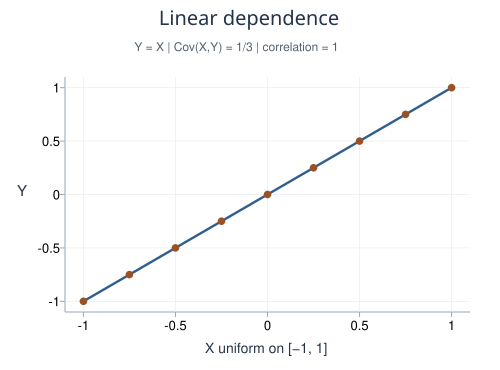
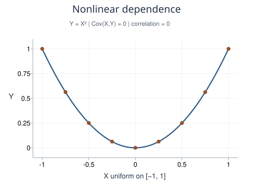
Counterexample Use symmetry to prove zero covariance without independence
Independent variables have covariance zero, but dependent variables can also have covariance zero. For X uniform on [−1,1] and Y=X², symmetry gives E[X]=E[X³]=0, so Cov(X,Y)=0, yet Y is completely determined by X. Zero covariance rules out a linear association measured by this moment, not every form of dependence.
For X uniform on [−1,1], E[X]=0, E[X²]=1/3 and E[X³]=0. With Y=X², Cov(X,Y)=E[X³]−E[X]E[X²]=0. Yet knowing X fixes Y. Here Var(Y)=1/5−1/9=4/45>0, so correlation is defined and equals zero.
For d variables in a column vector, Σ is d×d and symmetric. Its diagonal entries are variances. Off-diagonal entries carry covariance, including its sign.
Dimensions Read the outer product as a matrix of centered products
Collect related variables into a vector
A column vector \(X=[X_1,\ldots,X_d]^\top\) has mean \(\mu=\mathbb E[X]\in\mathbb R^d\). Its covariance matrix is:
The outer product of a d×1 column and a 1×d row gives a d×d matrix. Diagonal entries are variances; off-diagonal entries are covariances. The transpose exchanges rows and columns. A dot product \(v^\top w\) produces a scalar; an outer product \(vw^\top\) produces a matrix. Tracking these dimensions prevents many Gaussian-formula errors.
For the rain/lateness model, Var(R+L)=0.21+0.1875+2×0.105=0.6075. For R−L, the cross term changes sign: variance is 0.1875. Omitting covariance would give 0.3975 for both and miss the dependence.
This must hold for every fixed v. Positive diagonal entries alone do not guarantee a valid covariance matrix. Positive definiteness additionally requires strict positivity for every nonzero v.
Derivation Turn the quadratic form into an expected square
Why covariance is positive semidefinite
Covariance is symmetric. For any deterministic column vector v:
This is positive semidefiniteness. It is positive definite when the expression is strictly positive for every nonzero v. A positive-definite matrix has a positive determinant and an inverse. A singular covariance can occur when a nontrivial linear combination has zero variance, as with X₂=2X₁.
First center X. Then vᵀ(X−μ) is a scalar, and multiplying it by its transpose squares that scalar. Move the fixed v through expectation: vᵀE[(X−μ)(X−μ)ᵀ]v. This is a variance, so it cannot be negative. If a nonzero v gives zero, that projection is constant and the covariance is singular.
For v=(1,−1), vᵀAv=1+1−3=−1. A variance cannot be negative, so A is not a covariance matrix.
This is possible when X₂=2X₁ and Var(X₁)=1. For v=(2,−1), vᵀBv=0: the weighted sum is constant. B has no inverse.
Lecture core Determinants, inverse conditions and covariance geometry
For a symmetric 2×2 covariance \(\Sigma=[a,c;c,b]\), positive definiteness requires a>0 and ab−c²>0; then b>0 follows. In standard-deviation/correlation form:
With positive σ₁,σ₂, |ρ|<1 gives the nonsingular case. |ρ|=1 collapses a dimension. Correlation changes orientation and dependence; unequal diagonal variances can stretch the axes even when correlation is zero.
An inverse matrix and a determinant have different roles
The inverse reverses an invertible linear transformation. The determinant describes its signed volume scaling; its absolute value is the volume factor. For the 2×2 matrix above:
Later, Σ⁻¹ will measure a direction's squared distance relative to spread, while √|Σ| controls the Gaussian density's normalization volume. These are connected but distinct functions.
Why can a singular covariance be valid even though the ordinary full-dimensional Gaussian density uses an inverse and a determinant?
Check your reasoning
A covariance may have zero variation in a nonzero direction and remain positive semidefinite. It then has no inverse. An ordinary full-dimensional Gaussian density requires positive definiteness; a singular Gaussian can instead live on a lower-dimensional set. The next Gaussian sections make that distinction explicit.
Recall the conditions with the formulas
Average values for E[X]; average their squares for E[X²]. Var(X)=E[X²]−E[X]². State existence conditions and squared units.
Linearity needs finite expectations, not independence. Variance of aX+bY includes 2abCov(X,Y). A shift changes no variance.
Bernoulli: one indicator. Binomial: n independent Bernoulli(p) trials. Geometric: independent trials until success; count trials or failures explicitly.
Uniform: interval endpoints set the support. Exponential: λ is a rate, mean 1/λ. Normal: μ and σ², continued in section 9.
Shape α, lower bound b. The r-th moment is finite for r<α. Mean needs α>1; finite variance needs α>2. Check strict inequalities.
Σ is symmetric d×d; diagonal variances, off-diagonal covariances. Correlation needs positive finite variances. Zero covariance does not generally mean independence.
Every covariance is positive semidefinite. Positive definite means every nonzero projection has positive variance. Singular covariances can be valid but have no inverse.
Choose the identity, then justify it
Try without the formulas open. Give the method, its conditions and the interpretation.
- X takes −1 and 2 with probabilities 2/3 and 1/3. Find its mean and variance, then those of 3−2X.
- Four indicators each have success probability 1/4. Explain why the mean count is fixed while the variance is not. Compare independence with four copies of one indicator.
- For Uniform[2,8], derive the mean and variance from U uniform on [0,1].
- At geometric success probability 1/4, compare counting trials and failures. For an exponential rate of 2 per minute, state mean and variance with units.
- A mixture puts probability 0.4 at zero and 0.6 on Uniform(0,2). Calculate E[X], E[X²] and Var(X).
- For Pareto scale b=2, compare shape α=3 with α=1.5. Can a finite sample variance prove a finite population variance?
- Give a dependent pair with zero covariance. Explain why its relation is still visible in the joint distribution.
- Reject A=[[1,1.5],[1.5,1]] using a projected variance. Explain why B=[[1,2],[2,4]] can be a valid singular covariance.
Review answers and reasoning
- E[X]=0, E[X²]=2, Var(X)=2. Thus E[3−2X]=3 and Var(3−2X)=8.
- Linearity fixes the mean at 1. Independence gives variance 3/4; four copies give variance 3. Covariance terms differ.
- X=2+6U. E[U]=1/2 and Var(U)=1/12, so mean 5 and variance 36/12=3.
- Trial-count geometric: mean 4, variance 12. Failure-count: mean 3, variance 12. Exponential: mean 0.5 minutes, variance 0.25 minutes².
- E[X]=0.6×1=0.6; E[X²]=0.6×(4/3)=0.8; variance 0.8−0.36=0.44. The atom contributes zero to these two raw moments, while the continuous part is weighted by 0.6.
- At α=3: mean 3, variance 3. At α=1.5: mean 6, variance diverges. Finite sample arithmetic does not establish existence of a population moment.
- X uniform on [−1,1], Y=X². Symmetry gives Cov(X,Y)=0, but X determines Y. Both variances are positive, so correlation also exists and is zero.
- For v=(1,−1), vᵀAv=−1, impossible for a variance. For B with X₂=2X₁, v=(2,−1) gives a constant projection with variance zero; the matrix is valid and singular.
Self-check: support and parameter convention stated, the necessary moments exist, dependence handled correctly, and result units interpreted.
Save your progress or a return date
These are your own reports. Viewing an answer does not establish mastery.
Choose a suggested return gap after trying the questions.
Next: derive the normal distribution and build Gaussian geometry. Back to this block’s controls ↑
From a bell curve to Gaussian geometry
Normalize the scalar density, construct a Gaussian vector, then use covariance to read its contours. Finish by testing which assumptions the formulas need.
These controls apply to sections 9–12 only.
μ: mean · σ: scalar standard deviation · Σ: covariance matrix · |Σ|: determinant · superscript T: transpose · Φ: standard-normal CDF.
A covariance is positive semidefinite. The ordinary full-dimensional Gaussian density needs positive definiteness so that Σ has an inverse and a positive determinant.
9. The normal distribution from its normalization to its moments
Lecture connection: the normal-density plot and the requested mean/variance derivation.
The Gaussian density has a particular shape and a normalizing constant. Derive that constant, then use standardization to turn an interval into a probability.
We write \(X\sim\mathcal N(\mu,\sigma^2)\), where the second parameter is variance, not standard deviation. For σ>0:
The exponent penalizes squared standardized distance. Moving μ shifts the curve. Increasing σ broadens it and lowers its peak because its total area must remain one. A narrow Gaussian can have a density height greater than one.

- Read N(2,9): mean 2, variance 9, standard deviation 3.
- Standardize: Z=(X−2)/3. The lower bound −1 becomes −1; the upper bound 5 becomes 1.
- Integrate: P(−1≤X≤5)=Φ(1)−Φ(−1)≈0.6827.
Lecture derivation Normalize the bell shape using a two-dimensional integral
Where √(2π) comes from
Let \(I=\int_{-\infty}^{\infty}e^{-z^2/2}\,dz\). Its square is a two-dimensional integral with a circularly symmetric integrand. Convert to polar coordinates, where the area element is r dr dθ:
The radial integral is 1 after substituting u=r²/2. Since I is positive, I=√(2π), so the standard-normal density \(\phi(z)=e^{-z^2/2}/\sqrt{2\pi}\) integrates to one.
Why switch to two dimensions? Multiplying I by itself produces an integral of a radial function over the plane. In polar coordinates, a thin ring of radius r and width dr has area approximately 2πr dr. The radial substitution u=r²/2 leaves the simple integral of e⁻ᵘ, equal to one. This establishes the constant rather than assuming the density already integrates to one.
Lecture derivation Use symmetry and integration by parts for the moments
Derive the standard normal's mean and variance
The function zφ(z) is odd, so its integral across the real line is zero: E[Z]=0. Also φ′(z)=−zφ(z). Integration by parts gives:
The boundary term vanishes because the exponential tail dominates the linear factor. Thus Var(Z)=1. For X=μ+σZ, the affine identities already derived give E[X]=μ and Var(X)=σ². This also explains the 1/σ factor in the general density: stretching an interval by σ requires lowering its density by the same factor to preserve probability.
The standard-normal density is even: φ(−z)=φ(z). Multiplying by z makes an odd function, whose opposite contributions cancel. For the second moment, φ′(z)=−zφ(z) converts the integral into an integration-by-parts calculation. The Gaussian tail makes the boundary term vanish.
This statement assumes X is Gaussian and σ>0. Centering and scaling an arbitrary distribution do not make its shape Gaussian.
Lecture core Convert bounds with Φ and distinguish height from area
Turn values into probabilities
Define \(\Phi(z)=\int_{-\infty}^z\phi(t)\,dt\). Standardizing X gives:
Φ has no elementary antiderivative formula; software or tables evaluate it. For a standard normal, P(−1≤Z≤1)≈0.6827. That one-dimensional interval probability will not automatically be the probability inside a two-dimensional covariance ellipse.
Let X be N(1,4). Express P(−1≤X≤5) using the standard-normal CDF. Which quantity belongs in the denominator?
Check your reasoning
Use σ=2. The standardized bounds are −1 and 2, so the probability is Φ(2)−Φ(−1)≈0.8186. Dividing by 4 would confuse variance with standard deviation.
10. What makes a vector jointly Gaussian?
Lecture connection: independent and dependent Gaussian coordinates, the joint density, and moment parameterization.
A Gaussian vector is defined by its one-dimensional linear combinations. Its covariance can describe a full-dimensional density or a distribution confined to a smaller set.
A vector is jointly Gaussian when every scalar vᵀX is normal, allowing a constant as a zero-variance normal. Separate normal-looking coordinates do not establish this property.
Construct one concrete joint model
Use μ=(1,−1). Then X₁=1+2Z₁ and X₂=−1+Z₁+Z₂.
Variances are 4 and 2; covariance is 2. det(L)=2 and det(Σ)=4, so this is nonsingular.
Lecture core Read the Gaussian-vector definition and construction
A Gaussian random vector has the property that every scalar linear combination \(v^\top X\) is normally distributed, allowing zero-variance constants as degenerate normals. A useful construction is \(X=\mu+LZ\), where Z has independent standard-normal coordinates and \(LL^\top=\Sigma\). With a square invertible L, this produces a nonsingular covariance.
Because the standard coordinates are independent, their covariance is I. Centering X gives LZ, and E[(LZ)(LZ)ᵀ]=LE[ZZᵀ]Lᵀ=LLᵀ. This moment calculation is an instance of the affine covariance rule explained later in Gaussian operations.
For positive-definite Σ, the ordinary density on \(\mathbb R^d\) is:
Lecture derivation Track dimensions and the volume factor in a change of variables
Check the dimensions: x−μ is d×1, its transpose is 1×d, and Σ⁻¹ is d×d. The entire quadratic expression is a scalar. Σ contains d(d+1)/2 distinct entries because it is symmetric, while μ has d entries. Positive definiteness restricts which covariance entries can be chosen together.
Derive the normalization factor by a change of variables
The independent standard-normal vector has density \((2\pi)^{-d/2}e^{-z^\top z/2}\). Set x=μ+Lz, so z=L⁻¹(x−μ). A linear transformation scales volume by |det L|, so the transformed density divides by this factor:
The second equality follows from \(|LL^\top|=(\det L)^2\). This gives the Gaussian prefactor and exponent together. The square root of the determinant is a volume scale, not another arbitrary constant to memorize.
Read the determinant factor: x=μ+Lz stretches a small volume by |det L|. The transformed density must divide by that volume change to preserve its total probability. Since Σ=LLᵀ, |Σ|=(det L)², so |det L|=√|Σ|.
When a nonzero linear combination is constant, covariance is singular. The Gaussian vector can still be well defined, but the inverse/determinant density formula cannot be used.
Lecture core Singular Gaussian vectors and the density restriction
The inverse/determinant formula has a condition
Every covariance is positive semidefinite, but an ordinary full-dimensional Gaussian density needs positive definiteness. If X₂=X₁ or X₂=−X₁/2, the pair can still be a jointly Gaussian vector, yet it lies on a line, has determinant zero, and has no ordinary density with respect to two-dimensional area. Do not substitute a singular Σ into the inverse formula.
This distinction reconciles the lecture's dependent-coordinate examples with its density expression. Gaussian distributions include degenerate cases; the displayed nonsingular density does not cover them without a different formulation.
In the worked construction, are X₁ and X₂ independent? How many mean and covariance entries specify a two-dimensional Gaussian model?
Check your reasoning
They are not independent: their covariance is 2. A two-dimensional mean has 2 entries; a symmetric covariance has 3 distinct entries, making 5 parameters constrained by covariance validity. In this example the determinant is 4>0.
11. Read a Gaussian as geometry
Lecture connection: bivariate surfaces, equal-density contours, and changing variances/correlations.
A point is far away relative to the distribution’s spread. Whitening makes this distance an ordinary Euclidean distance in transformed coordinates.
Define the squared Mahalanobis distance from the mean:
Center the point, express it in directions of variation and divide each direction by its standard deviation. Squaring and summing gives D².
The density depends on x only through this quadratic form. Points with the same D² have the same density. Unlike Euclidean distance, Mahalanobis distance accounts for how much variation is expected in each direction and how the coordinates vary together.


For Σ=diag(4,1), A gives D²=2²/4+0²/1=1; B gives D²=0²/4+1²/1=1. They therefore have equal density, even though their raw Euclidean distances differ.
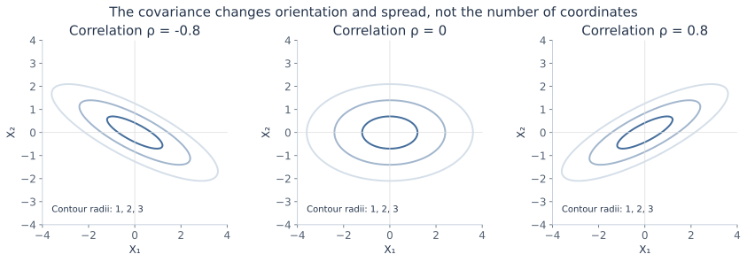
Lecture derivation Eigenvectors set orientation; eigenvalues set axes and volume
Principal directions explain the ellipses
A symmetric positive-definite covariance can be written \(\Sigma=QDQ^\top\). Q contains orthonormal eigenvectors, and D is diagonal with positive eigenvalues λᵢ. An eigenvector is a direction that the matrix scales without rotating into another direction. In coordinates \(u=Q^\top(x-\mu)\):
The level D²=c² therefore has semiaxis lengths c√λᵢ along the eigenvectors. Large variance means a longer axis and a smaller distance penalty per unit movement in that direction. Equal eigenvalues give a sphere; unequal ones give ellipsoids. In two dimensions, these are circles or ellipses.
The determinant controls volume and peak height
Since \(|\Sigma|=\prod_i\lambda_i\), the square root of the determinant multiplies the principal standard deviations. In two dimensions, the ellipse D²≤c² has area \(\pi c^2\sqrt{|\Sigma|}\). A Gaussian with a larger covariance volume spreads its unit probability over more space, reducing the peak \(f(\mu)=1/((2\pi)^{d/2}\sqrt{|\Sigma|})\).
In this decomposition, D is the diagonal eigenvalue matrix; it is distinct from the scalar distance D_M. If a contour has D_M²=c², each semiaxis has length c√λᵢ. Equal determinants can give the same peak density while having different axis lengths or orientations.
Lecture comparisons Read correlation, unequal scales and near-singularity
| Covariance | Interpretation |
|---|---|
| [[1,0],[0,1]] | Equal variances and zero correlation give circular Gaussian contours. |
| [[1,0.8],[0.8,1]] | Positive correlation tilts the long axis upward. |
| [[0.03,0],[0,1]] | Coordinates are independent in this joint Gaussian model, but unequal variances give a narrow, tall ellipse. |
| [[1,−0.8],[−0.8,1]] | Negative correlation tilts the long axis downward. |
| [[1,−0.99],[−0.99,1]] | det(Σ)=0.0199: very thin, but still nonsingular. |
| [[1,−0.95],[−0.95,1]] | det(Σ)=0.0975: less nearly singular than the −0.99 case. |
For unit diagonal variances, determinant is 1−ρ². Approaching |ρ|=1 shrinks one eigenvalue toward zero. The inverse formula remains valid for the −0.99 and −0.95 examples; it fails at the exact singular boundary.
For a nonsingular two-dimensional Gaussian, the radius needed for a given probability differs from the one-dimensional standard-normal interval rule.
Derivation Integrate radial probability and find a 95% ellipse
For a standard bivariate Gaussian, use polar coordinates to find the mass inside radius c:
This also holds for a nonsingular affine transformation into a bivariate Gaussian. Radius 1 encloses about 39.35%, not the one-dimensional 68.27%. A 95% probability ellipse needs \(c=\sqrt{-2\log(0.05)}\approx2.448\). A contour is a set of equal density; the probability belongs to an enclosed region.
For c≥0, the standard bivariate density on a ring is e⁻ʳ²⁄²/(2π), while ring area is 2πr dr. The angular factor cancels and leaves the radial integral. For 95% probability, solve 1−e⁻ᶜ²⁄²=0.95. A nonsingular whitening transformation preserves probability, so the same radius applies to ellipses in the original coordinates.
For Σ=diag(9,1) and mean zero, compare A=(3,0) with B=(0,2). Which has higher density? Use squared Mahalanobis distances.
Check your reasoning
A has D²=9/9=1; B has D²=4/1=4. A has higher density. The ratio f(B)/f(A)=exp[−(4−1)/2]=e⁻¹⋅⁵≈0.2231. Raw Euclidean distance would incorrectly make A look farther away.
12. Gaussian coordinates do not guarantee a Gaussian joint model
Lecture connection: the independent/dependent cases and the prompt to find Gaussian marginals that are not jointly Gaussian.
A Gaussian assumption concerns the whole joint distribution. Check a linear combination when separate marginals or a covariance matrix do not settle the question.
Normal marginals, zero covariance and joint Gaussianity are different claims. For a jointly Gaussian vector, zero cross-covariance gives independence; without joint Gaussianity that implication fails.
(Z₁,Z₂), with independent Z₁ and Z₂.
- Covariance
- I
- Joint Gaussian?
- Yes
- Ordinary plane density?
- Yes
(Z,−Z/2), with Z standard normal.
- Covariance
- [[1,−1/2],[−1/2,1/4]]
- Joint Gaussian?
- Yes
- Ordinary plane density?
- No: singular
(Z,SZ), with an independent fair sign S.
- Covariance
- I
- Joint Gaussian?
- No
- Ordinary plane density?
- No: support on two lines
Lecture core Independent Gaussian coordinates and the converse with diagonal covariance
Independent Gaussian coordinates are jointly Gaussian
For independent \(X_i\sim\mathcal N(\mu_i,\sigma_i^2)\), multiplying the scalar densities gives a joint density with diagonal covariance. Conversely, for a nonsingular jointly Gaussian vector whose covariance is diagonal, its exponent and normalizer factor into scalar Gaussian densities. Thus its coordinates are independent.
More generally, zero cross-covariance between two blocks of a jointly Gaussian vector implies independence of those blocks. The joint-Gaussian assumption is what makes this stronger conclusion possible. It is not a general theorem about arbitrary uncorrelated data.
Independence allows the joint density to factor into scalar normal densities. Under the jointly Gaussian assumption, a diagonal covariance makes the exponent and normalizer factor in the reverse direction. The Gaussian assumption is doing essential work.
Lecture example Verify a dependent singular pair using every projection
Dependent can still be jointly Gaussian
If Z is standard normal and X=[Z,−Z/2]ᵀ, every linear combination is \((a-b/2)Z\), which is Gaussian or constant. The vector is jointly Gaussian, but singular. Its covariance is [1,−1/2;−1/2,1/4], with determinant zero. This is the line-supported case, not an ordinary two-dimensional bell-shaped density.
The vector (1,2) projects this pair to Z+2(−Z/2)=0. Other projections can remain nondegenerate normals. A zero projection variance explains singularity without contradicting joint Gaussianity.

- Check the marginals: Z is standard normal; SZ has the same symmetric distribution.
- Check covariance: the independent sign has mean zero, so E[SZ²]=0.
- Test a linear combination: Z+SZ equals 0 whenever S=−1, giving an atom of probability 1/2.
- Conclude: that sum is neither a nondegenerate normal nor a constant. The pair cannot be jointly Gaussian.
Lecture counterexample Work through the covariance, atom and joint-distribution distinction
A counterexample with normal marginals and zero covariance
Let Z be standard normal and let S independently be +1 or −1 with equal probability. Define X=Z and Y=SZ. Both X and Y are standard normal because changing the sign of a symmetric normal leaves its distribution unchanged. Also:
Yet |X|=|Y| always, so the variables are dependent. The sum X+Y is zero whenever S=−1, giving a point mass of 1/2 at zero. When S=+1, it is 2Z. A nondegenerate normal has no point mass; this sum is not normal. Therefore the pair is not jointly Gaussian despite normal marginals and covariance I.
The example separates three statements: each coordinate is normal; coordinates have zero covariance; the vector is jointly Gaussian. None of the first two, even together, replaces the third. It also shows why a positive-definite covariance alone does not establish that a vector has a full-dimensional density.
For X=Z and Y=SZ, consider H=(X+Y)/√2. Its mean is 0 and variance is 1. Must H be standard normal?
Check your reasoning
No. With probability 1/2, S=−1 and H=0. With probability 1/2, H=√2Z, which has variance 2. Thus H has variance (1/2)×0+(1/2)×2=1 but has a point mass of 1/2 at zero. Matching mean and variance, or standardizing, does not establish a Gaussian distribution.
Reconstruct the model and its conditions
N(μ,σ²) uses variance as its second parameter. For σ>0, standardize using (X−μ)/σ and compute a difference of Φ values.
Square the unnormalized scalar integral, integrate radially in two dimensions and take the positive square root. Symmetry gives E[Z]=0; integration by parts gives E[Z²]=1.
Every fixed linear combination is normal, including a possible constant. The construction X=μ+LZ uses independent standard normals and covariance LLᵀ.
The full-dimensional inverse/determinant formula needs positive-definite Σ. A singular Gaussian remains a Gaussian vector but has no ordinary full-space density.
Eigenvectors set orientation; a D_M²=c² contour has semiaxes c√λᵢ. The determinant controls covariance volume and the peak normalizer.
In two dimensions, radius 1 gives about 39.35%, while radius 2.448 gives about 95%. The 68.27% one-standard-deviation rule is one-dimensional.
Zero covariance implies independence for jointly Gaussian blocks. Normal marginals and covariance I can still describe a dependent, non-Gaussian pair such as (Z,SZ).
Test the assumption behind each formula
Work on paper or aloud before opening the feedback. State dimensions, units and the density conditions.
- Reconstruct the scalar normalizing integral using polar coordinates. Why is the radial area factor r needed?
- Derive E[Z]=0 and E[Z²]=1 for a standard normal without quoting the moment table.
- For X~N(1,4), standardize the interval [−1,5]. Could a normal density have a peak above 1?
- For L=[[2,0],[1,1]] and μ=(1,−1), find the covariance, determinant and number of distinct mean/covariance parameters.
- For Σ=diag(4,1), compare the Euclidean and Mahalanobis distances of (2,0) and (0,1). Describe the whitened coordinates.
- State the two-dimensional probability inside radius 1 and the radius enclosing 95%. Why does a thin ellipse at correlation −0.99 still have a density?
- Show that (Z,−Z/2) is jointly Gaussian and singular using linear combinations.
- Explain why (Z,SZ) has normal marginals and covariance I but is not jointly Gaussian. Does scaling its sum to variance 1 fix this?
Review answers and reasoning
- Square I=∫e⁻ᶻ²⁄²dz. In the plane, a ring contributes circumference 2πr times width dr, giving I²=2π∫₀∞r e⁻ʳ²⁄²dr=2π and I=√(2π).
- zφ(z) is odd, so its integral is zero. Use φ′(z)=−zφ(z) and integration by parts; the boundary term vanishes and the remaining integral of φ is 1.
- σ=2 gives bounds −1 and 2; probability Φ(2)−Φ(−1)≈0.8186. A density peak can exceed 1: N(0,0.01) has σ=0.1 and peak about 3.9894. Its point probabilities are still zero.
- Covariance [[4,2],[2,2]], determinant 4. The mean has 2 entries and symmetric covariance has 3, giving 5 parameters constrained by validity.
- Euclidean distances are 2 and 1; both Mahalanobis distances are 1. Whitening z=(x₁/2,x₂) sends the points to (1,0) and (0,1).
- Radius 1 gives 1−e⁻¹⁄²≈0.3935; radius √(−2log0.05)≈2.4477 gives 0.95. At ρ=−0.99 and unit variances, determinant 0.0199 is positive; singularity occurs at the exact boundary |ρ|=1.
- Every projection is (a−b/2)Z, normal or constant. The projection with weights (1,2) is zero, so covariance is singular.
- An independent sign preserves the symmetric normal marginal and makes cross-covariance zero, yet the sum has probability 1/2 of being zero. Scaling retains that atom and cannot make it normal.
Self-check: parameter convention correct; matrix dimensions consistent; positive-definiteness restriction stated; a joint claim supported by more than marginal moments.
Save your progress or a return date
These are your own reports. Opening an explanation does not establish mastery.
Choose a suggested return gap after trying the questions.
Next: derive Gaussian marginal and conditional distributions, then explore transformations and operations. Back to this block’s controls
Predict after observing, then combine Gaussian models
Choose the probability question first. Derive what an observation changes, test the result, then distinguish transforming a vector, adding random variables and multiplying density functions.
The full explanations remain available below.
X₂ is random before observation; x₂ is the fixed value afterward. N(μ,σ²) uses variance. Matrix multiplication acts from right to left; its order matters.
Use a jointly Gaussian model and positive-definite covariance for the ordinary conditional-density formulas below. Earlier sections explain covariance, inverse conditions and the Gaussian assumption.
13. Marginal and conditional Gaussians, with derivations
Lecture connection: joint/marginal/conditional notation, block covariance, and the conditioning formulas.
Marginalization removes an unobserved coordinate. Conditioning uses its observed value. In a joint Gaussian model, both results are Gaussian, but their parameters differ.
Collect all possible values of the other coordinate by integration. Retain the matching mean and covariance blocks.
Fix the observed coordinate and normalize that density slice over the variable still being predicted.
Read a block matrix by its job
For a two-coordinate target X₁ and a one-coordinate observation X₂, these are the block shapes:
| Covariance block | Target X₁ · length 2 | Observed X₂ · length 1 |
|---|---|---|
| Target X₁ | Σ₁₁ · 2 × 2 | Σ₁₂ · 2 × 1 |
| Observed X₂ | Σ₂₁ · 1 × 2 | Σ₂₂ · 1 × 1 |
The gain B=Σ₁₂Σ₂₂⁻¹ is 2×1. It maps an observed deviation (1×1) to a target-mean correction (2×1). The covariance reduction BΣ₂₁ is 2×2.
The worked calculation below uses scalar blocks (d₁=d₂=1), so matrix products become ordinary products.
Selecting coordinates preserves joint Gaussianity. No value of X₂ has been observed in this question.
Lecture core Partition the vector and justify marginalization
Partition the vector and keep the blocks straight
X₁ and X₂ can themselves be vectors. If their lengths are d₁ and d₂, Σ₁₂ is d₁×d₂ and Σ₂₁=Σ₁₂ᵀ. Assume the full covariance is positive definite for the ordinary-density formulas below.
Marginalization retains the matching blocks
The marginal X₁ is \(\mathcal N(\mu_1,\Sigma_{11})\), and X₂ is \(\mathcal N(\mu_2,\Sigma_{22})\). One explanation is that selecting coordinates preserves the defining Gaussian property: every linear combination of the selected coordinates is also a linear combination of the original vector. Its mean and covariance are the corresponding subvector and submatrix.
Do not invert the whole covariance and then select a block to get the marginal covariance. A block of a matrix's inverse is generally not the inverse of the matching block. Marginalization and conditioning have different algebra.
Matrix order matters. The mean correction has dimension d₁×1; the covariance correction is d₁×d₁. The covariance does not depend on the observed value x₂ in this jointly Gaussian model, although the mean does. The correction is positive semidefinite, so conditioning cannot increase covariance in the matrix order here.
A complete numerical example
Let μ=[1,2]ᵀ and Σ=[4,3;3,9]. The marginal X₁ is N(1,4). Observing X₂=5 gives:
Measure the observation relative to its own mean.
Convert that deviation into a target correction.
Add the correction to the target’s original mean.
Subtract the explained variation, not the observed value.
Therefore X₁|X₂=5 is N(2,3). The observation moves the conditional mean and reduces its uncertainty. If the cross-covariance were zero in a jointly Gaussian model, the mean correction would vanish and the conditional distribution would equal the marginal.
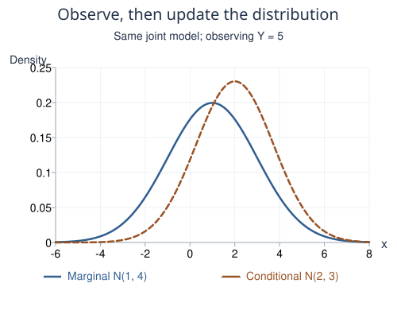
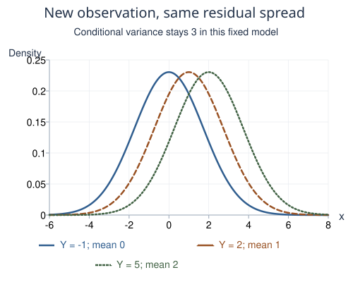
Lecture derivation Construct a residual that is independent of the observation
Derive the conditional through a residual
Let \(B=\Sigma_{12}\Sigma_{22}^{-1}\) and define the centered residual \(R=X_1-\mu_1-B(X_2-\mu_2)\). It is an affine function of a Gaussian vector, so it is Gaussian. Its cross-covariance with X₂ is:
The pair (R,X₂) is jointly Gaussian, so this zero cross-covariance implies independence. Expanding R's covariance and using B gives:
After observing X₂=x₂, the remaining uncertainty is R, whose distribution is unchanged by that observation. Therefore:
Why this works: choose B so that the residual’s cross-covariance with X₂ cancels. The pair (R,X₂) remains jointly Gaussian because it is an affine transformation of the original joint vector. That joint assumption upgrades zero cross-covariance to independence. Reassemble X₁=μ₁+B(X₂−μ₂)+R after fixing X₂=x₂.
For μ=(0,1) and Σ=[[9,3],[3,4]], find the marginal X₁ and the conditional distribution after observing X₂=3. State the variance, not just the mean.
Check your reasoning
Marginal X₁ is N(0,9). Gain 3/4 times innovation 3−1=2 gives mean 3/2. Conditional variance is 9−9/4=27/4=6.75. Thus X₁ | X₂=3 is N(1.5,6.75). The determinant 36−9=27 is positive.
Lecture derivation Complete the bivariate square and read its center and variance
See the same result by completing a bivariate square
For scalar coordinates, let \(u=(x-\mu_X)/\sigma_X\) and \(v=(y-\mu_Y)/\sigma_Y\). The joint quadratic form is:
With y fixed, v² is constant in x. The remaining factor is a Gaussian-shaped function centered at u=ρv. Dividing the joint slice by the marginal fY(y) normalizes it. Thus:
For |ρ|<1 and σX,σY>0, the coefficient of (u−ρv)² determines conditional variance 1−ρ² in standardized X units. Converting back multiplies the variance by σX², not σX.
Density bridge Why conditioning on a continuous value does not divide by zero
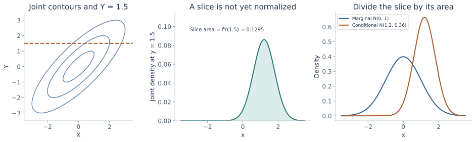
The denominator is a marginal density value, obtained by integrating the joint slice over x₁. It is not P(X₂=x₂), which is zero for a nonsingular continuous Gaussian. This density formula applies where fX₂(x₂)>0; a nonsingular Gaussian marginal is positive at every finite observation.
Matrix reasoning Explain why the conditional covariance cannot increase here
The removed covariance is K=Σ₁₂Σ₂₂⁻¹Σ₂₁=BΣ₂₂Bᵀ. For any fixed target-space vector v, vᵀKv=(Bᵀv)ᵀΣ₂₂(Bᵀv)≥0 because Σ₂₂ is positive definite. Thus K is positive semidefinite and Σ₁|₂=Σ₁₁−K is no larger than Σ₁₁ in this matrix sense. The covariance formula is valid for any observed value under this fixed jointly Gaussian model; its numerical value does not depend on x₂.
This pointwise conclusion is special to this model. For a general distribution, conditional variance can depend on the observation and can exceed marginal variance for some values. Do not turn the Gaussian result into a claim about every possible conditioning event.
If a residual is uncorrelated with the observation, does that alone establish independence and the conditional formula?
Check your reasoning
No. Here independence follows because the residual and observation are jointly Gaussian. Outside that setting, the random-sign counterexample shows that zero covariance can coexist with dependence. The affine moment calculation alone does not establish a Gaussian conditional distribution.
14. Explore covariance and conditioning
Use the workbench to test a prediction, then explain the result using the conditional formula. The chart is feedback for reasoning about a fixed model.
Change the correlation and the observed Y value. Watch the joint contours and compare the marginal distribution of X with its conditional distribution. The plotted contours have Mahalanobis radii 1, 2, and 3; they are not labels for one-dimensional “sigma percentages.”
Predict first; reveal feedback after trying
Start from the workbench defaults: μX=μY=0, σX=σY=1, ρ=0.6, observed Y=1. Write a mean and variance before opening the chart. Reset before each case.
- Observe Y=2: which conditional parameter moves, and which stays fixed?
- Use ρ=−0.6 with Y=1: what reverses sign? Does the conditional variance change?
- Use ρ=0: compare the conditional distribution with the marginal.
- Use ρ=0.95: does a very thin contour already imply a singular covariance?
Explore Open the covariance and conditioning workbench
Bivariate Gaussian workbench
On a small screen, scroll the chart horizontally to inspect both panels.
The axes use a fixed −6 to 6 range; portions of curves outside that window are clipped. The joint plot's horizontal line is the observed Y; the point also uses the probe X. The density value is a height, not a point probability. Controls stay within the nonsingular |ρ|<1 case; the text explains the singular boundary.
Check the workbench predictions
| Change | Conditional mean | Conditional variance |
|---|---|---|
| Default: ρ=0.6, Y=1 | 0.6 | 0.64 |
| Observe Y=2 | 1.2 | 0.64 |
| ρ=−0.6, Y=1 | −0.6 | 0.64 |
| ρ=0, Y=1 | 0 | 1 |
| ρ=0.95, Y=1 | 0.95 | 0.0975 |
For this unit-scale model, the conditional mean is ρy and variance is 1−ρ². At ρ=0.95 the determinant is 0.0975>0, so the density is still nonsingular. Changing ρ also changes the joint model; changing only the observation does not.
Set both means to 0, σX=1.5, σY=0.5, ρ=0.8 and observed Y=4. Compute the conditional mean and variance before inspecting the plot. What if its peak is outside the plotted window?
Check your reasoning
Mean is 0.8×(1.5/0.5)×4=9.6 and variance is 1.5²×(1−0.8²)=0.81. The chart stops at X=6, so the peak lies outside it. Clipping is not zero probability or an invalid conditional distribution. The numeric output and fixed-axis note matter. Reset after exploring.
15. Transform, add, and multiply Gaussian descriptions
Lecture connection: affine transformations, independent sums, products of Gaussian functions, and the canonical parameterization.
The same Gaussian algebra appears in several different operations. Say what is being transformed or combined before choosing a formula.
Transform one Gaussian vector
The mean is transformed by A and shifted by b. Covariance is multiplied by A on the left and Aᵀ on the right; b adds no random spread.
Lecture derivation Center the affine transform to derive its covariance
Mean and covariance under any affine transformation
For deterministic A∈ℝᵐˣᵈ and b∈ℝᵐ, define Y=AX+b. Linearity gives E[Y]=Aμ+b. Centering removes b, and the outer-product definition gives:
These moment identities hold for any X with the required finite moments, not only a Gaussian. If X is jointly Gaussian, every linear combination of Y is also a linear combination of X, so Y is Gaussian:
A need not be square or invertible for this forward statement. An inverse transformation is a different matter. The result can be singular when A loses rank or creates more coordinates than the random vector can vary independently.
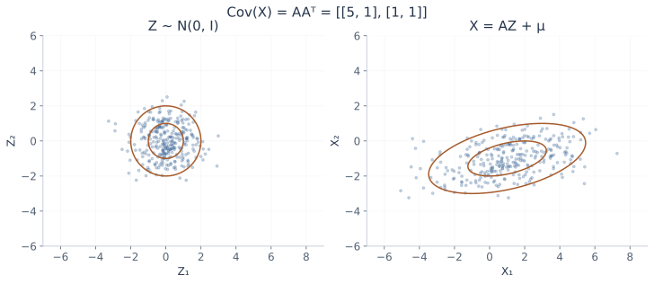
A smaller output: for the running μ=(1,2), Σ=[[4,3],[3,9]], choose A=[1,−1] and b=0. The scalar X₁−X₂ has mean −1 and variance 4+9−2×3=7, hence N(−1,7). This forward map is valid even though A is rectangular.
Lecture core Invert only a square, invertible transformation
If A is square and invertible and Y∼N(ν,C), then solving Y=AX+b gives X=A⁻¹(Y−b). Applying the same forward rule to this solved expression gives:
Here A⁻ᵀ means (A⁻¹)ᵀ. This inverse rule requires an actual inverse; it does not extend unchanged to a rectangular or rank-deficient A.
For rectangular or rank-deficient A there is no ordinary two-sided inverse. A covariance can remain valid while becoming singular, for example when one scalar is copied into two output coordinates.
Using the same running μ and Σ, find the distribution of X₁+2X₂. Is independence needed for this affine Gaussian result?
Check your reasoning
The mean is 1+2×2=5. Variance is 4+4×9+4×3=52, so the result is N(5,52). Independence is not needed: joint Gaussianity gives the shape, and AΣAᵀ already includes the cross-covariance.
Add random variables: uncertainty accumulates
Independence removes the cross-covariance terms. Joint Gaussianity ensures that the linear combination is Gaussian.
Lecture derivation Stack independent vectors, or keep dependent cross terms
Add independent Gaussian random variables
For independent Gaussian vectors with compatible dimensions, stacking them gives a joint Gaussian with block-diagonal covariance. Apply the linear map [I I] to sum them:
If they are jointly Gaussian but dependent, the sum is still Gaussian, with covariance \(\Sigma_X+\Sigma_Y+\operatorname{Cov}(X,Y)+\operatorname{Cov}(Y,X)\). Merely having Gaussian marginals is insufficient, as the random-sign example showed.
A direct scalar check uses \(\mathbb E[e^{tZ}]=e^{t^2/2}\) for a standard normal Z, obtained by completing the square in its integral. For independent Gaussian terms, expectations of products factor, giving the exponential of a quadratic in t with the summed mean and variance. This is another way to establish the sum's Gaussian form.
For a standard normal, this completed square factors the moment-generating integral into exp(t²/2) times a translated normal integral equal to 1. Independence factors the generating function for a sum; multiplying the exponentials adds their quadratic exponents. This identifies the summed mean and variance. Without independence, retain the cross terms; with only Gaussian marginals, even the Gaussian shape can fail.
Precision makes log densities easier to combine
Λ is precision, the coefficient of the quadratic penalty. η is the precision-weighted mean. κ is the scalar that makes the density integrate to one. In one dimension, precision is 1/variance.
Lecture derivation Expand the quadratic and derive the full normalizing constant
Expand the log density: precision and canonical parameters
Let Λ=Σ⁻¹, called the precision matrix, and η=Λμ. Expanding the centered quadratic form gives:
To derive the constant, expand \((x-\mu)^\top\Lambda(x-\mu)=x^\top\Lambda x-2\mu^\top\Lambda x+\mu^\top\Lambda\mu\), and use log|Σ|=−log|Λ|. Since μ=Λ⁻¹η, the last term is ηᵀΛ⁻¹η.
A source typo to resolve by algebra: the canonical-parameter slide prints ηᵀΛη in its constant. With the slide's own definition η=Λμ, the correct term is ηᵀΛ⁻¹η. Both expressions are scalars, so dimensions alone do not catch this error. Substitution into the expanded quadratic does.
Check a scalar: N(2,4) gives Λ=1/4 and η=1/2. Since η²/Λ=1, κ=−[log(8π)+1]/2. Substituting these values reconstructs −log(8π)/2−(x−2)²/8. The corrected constant is required for a normalized density.
For N(−1,9), find Λ, η and κ. Which quadratic term belongs in the constant?
Check your reasoning
Λ=1/9 and η=−1/9. The term η²/Λ is 1/9, giving κ=−log(18π)/2−1/18. Using η²Λ would give 1/729 and would not reproduce the original normal density.
Multiply densities: precision accumulates
For scalar N(x;a,A) and N(x;b,B), with positive variances A and B, the normalized product has:
In the vector case, replace reciprocal variances with inverse covariance matrices and retain matrix order. This operation combines Gaussian functions; it does not describe the random-variable product XY.
Complete an unequal-precision example
Use N(x;0,4) and N(x;3,1). Their precisions are 1/4 and 1, so combined precision is 5/4 and variance C=4/5. Fill in the mean c before checking below.
Finish the precision-weighted mean
c=(4/5)[(1/4)×0+1×3]=12/5=2.4. The normalized weights are 0.2 and 0.8. The result is N(2.4,0.8), narrower than either input. Adding independent variables with the same input distributions instead gives N(3,5).
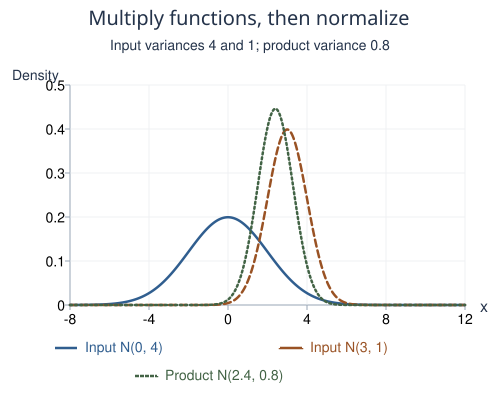
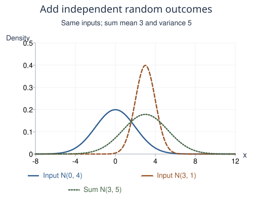
Lecture core Add precision matrices and complete the vector square
Multiply Gaussian density functions of the same argument
Let f₁(x)=N(x;a,A) and f₂(x)=N(x;b,B), with positive-definite covariance matrices A and B. Adding their log densities adds quadratic and linear coefficients:
This is completing the square in precision form. The product is generally not normalized. In fact its integral is \(\mathcal N(a;b,A+B)\), so the exact identity is that scalar times N(x;c,C). The multiplication combines functions evaluated at the same x; it is not the distribution of the random product XY.
With Λ=A⁻¹+B⁻¹ and η=A⁻¹a+B⁻¹b, set C=Λ⁻¹ and c=Cη. Then −xᵀΛx/2+ηᵀx=−(x−c)ᵀΛ(x−c)/2+cᵀΛc/2. The term independent of x contributes to the scale; the remaining shape is Gaussian.
Normalization Recover the overlap constant and compare with a random sum
One way to verify the normalization constant is to introduce independent U∼N(a,A) and V∼N(b,B). The difference U−V is N(a−b,A+B). Its density at zero is the overlap integral \(\int f_U(x)f_V(x)\,dx\), which equals \(\mathcal N(0;a-b,A+B)=\mathcal N(a;b,A+B)\). This supplies the missing scalar after completing the square.
For N(x;0,1)×N(x;2,1), the combined precision is 2, so C=1/2 and c=1. The normalized product is N(1,1/2). In contrast, adding independent variables with those two distributions gives N(2,2). Their variances move in opposite directions because the operations are different.
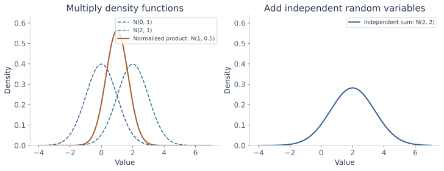
For the unequal-variance example above, the overlap integral is N(0;3,5)=exp(−9/10)/√(10π), approximately 0.072537. Dividing the raw product by this positive scalar makes its total area one. The product’s precision rule describes its normalized shape; the constant is still needed for equality of densities.
Choose the operation and carry its assumptions
Keep μ₁ and Σ₁₁. No value of X₂ is fixed. Take Σ₁₁ directly; do not invert the whole covariance and select a precision block.
Mean = original mean + gain × observed deviation. Gain B=Σ₁₂Σ₂₂⁻¹; covariance = Σ₁₁−BΣ₂₁. Matrix order and dimensions matter.
The residual R=X₁−μ₁−B(X₂−μ₂) is uncorrelated with X₂. Joint Gaussianity makes them independent; its distribution supplies the remaining uncertainty.
In a fixed jointly Gaussian model, conditional covariance does not depend on the observed value. A slice must be normalized by its marginal density. A zero point probability is not the denominator.
AX+b has mean Aμ+b and covariance AΣAᵀ. These moment rules need finite moments; Gaussian output shape additionally needs joint Gaussianity. A forward map can be rectangular; an inverse needs invertibility.
Independent Gaussian vectors: add means and covariances. For dependent jointly Gaussian vectors retain both cross-covariance terms. Normal marginals alone do not guarantee a Gaussian sum.
Λ=Σ⁻¹, η=Λμ, log f=κ+ηᵀx−xᵀΛx/2. The constant contains ηᵀΛ⁻¹η, with the inverse. It must agree with the expanded centered quadratic.
Add precisions and precision-weighted means at the same x. The result is proportional to a Gaussian; divide by its overlap integral to normalize. This differs from both a random sum and a random product.
Explain an update without the formula sheet
Try these on paper or aloud. State the random quantities, observed values, dimensions and assumptions before the calculation.
- For a target of length 2 and observation of length 3, give the dimensions of Σ₁₂, B and the covariance correction.
- For μ=(0,1), Σ=[[9,3],[3,4]] and X₂=3, derive the marginal and conditional of X₁.
- Explain the exact step where joint Gaussianity is needed in the residual derivation.
- Why can a continuous observation have point probability zero while its Gaussian conditional density is well defined?
- At unit marginal scales and ρ=0.6, compare observations Y=1 and Y=2, then change ρ to −0.6.
- For μ=(1,2), Σ=[[4,3],[3,9]], derive the distribution of X₁+2X₂.
- Can a rectangular affine map preserve Gaussianity? Can you always invert it?
- For N(−1,9), reconstruct the canonical parameters and constant.
- Compare the independent random sum of N(0,4) and N(3,1) with the normalized product of their density functions.
- For two dependent jointly Gaussian vectors, which terms must be added to the independent-sum covariance? What if only their marginals are Gaussian?
Review answers and reasoning
- Σ₁₂ and B are 2×3; Σ₂₂⁻¹ is 3×3; BΣ₂₁ is 2×2. Multiplication order maps a 3×1 innovation to a 2×1 target correction.
- Marginal N(0,9); gain 3/4 and innovation 2 give mean 1.5. Covariance is 9−9/4=6.75, giving N(1.5,6.75).
- The covariance calculation produces Cov(R,X₂)=0. The pair is jointly Gaussian because it is an affine image of the original vector, so the zero cross-covariance establishes independence. Uncorrelatedness alone is insufficient.
- The conditional density divides a joint-density slice by its integral over the target variable, the marginal density at the observation. It does not divide by the observation’s point probability.
- Means are 0.6 and 1.2, with variance 0.64 in both. For ρ=−0.6 and Y=1 the mean is −0.6 and variance is still 0.64. Changing correlation changes the model; changing only the observation does not.
- The affine map [1,2] gives mean 5 and variance 4+36+12=52, hence N(5,52). The covariance term matters; independence is not assumed.
- Every linear combination of its output is a linear combination of the input, so Gaussianity is preserved. A rectangular or rank-deficient map lacks an ordinary two-sided inverse and can create singular output covariance.
- Λ=1/9, η=−1/9, κ=−log(18π)/2−1/18. The constant uses η²/Λ=1/9. Expand the log density to verify.
- The sum is N(3,5). The normalized product is N(2.4,0.8): precision 1/4+1=5/4, weighted mean (3)/(5/4)=2.4. The raw product integrates to N(0;3,5), not 1.
- Add Cov(X,Y)+Cov(Y,X). Joint Gaussianity gives the sum’s Gaussian shape. With only Gaussian marginals, the random-sign counterexample can produce a nonnormal sum even when covariance is zero.
Self-check: correct operation; correct observation and matrix order; assumptions present; normalized distribution distinguished from a proportional function.
Save your progress or a return date
These are your own reports. Opening an answer does not establish mastery.
Choose a suggested return gap after trying the questions.
Next: connect these tools to regression and classification. Back to this block’s controls
16. What this prepares you to learn next
The next model-building step is to estimate distribution parameters from data, then use the fitted distribution to predict. A likelihood regards observed data as fixed and varies parameters; a density regards parameters as fixed and varies the possible observation. They can use the same algebraic expression while asking different questions.
Regression: the conditional Gaussian mean is affine in the observed coordinates. This is the bridge to a statistical view of linear regression. Gaussian classification: Bayes' rule combines a class prior with a class-conditional density to obtain a posterior. Those derivations, including estimation, belong to the next chapter.
PCA and factor models: covariance eigenvectors identify directions of variation, while affine Gaussian constructions describe latent factors plus noise. Mixtures of Gaussians: a weighted mixture can represent more complicated shapes, but is generally not one Gaussian. Filtering and estimation: conditioning and precision addition recur in models such as Kalman filters. These are connections named by the lecture, not assumptions that every future method has already been covered.
You can also return to dropout expectations and batch-normalization statistics. Their probability and variance calculations now fit inside a more general framework.
17. Practice: probabilities, moments, and Gaussian reasoning
These are original practice problems for these notes. Work with the solutions closed. State the support, parameter convention, and assumptions that justify each formula.
1 · Outcome, event, or random variable?
Toss two independent fair coins. Let X count heads. List the sample space, the event {X=1}, the PMF, E[X], and Var(X).
Solution and reasoning
The outcomes are HH,HT,TH,TT, each with probability 1/4. The event is {HT,TH}. The PMF at 0,1,2 is 1/4,1/2,1/4. E[X]=1, E[X²]=3/2, and Var(X)=1/2. X is a function on the outcomes, not the event itself.
2 · A density greater than one
X is uniform on [0,0.2]. Find fX(0.1), P(X=0.1), and P(0.04≤X≤0.10). Why do these answers not contradict each other?
Solution and reasoning
The density is 5, the point probability is 0, and the interval probability is 5×0.06=0.30. Density is probability per unit length; only the integrated area must be a probability.
3 · Read a mixed CDF
Use the mixture with mass 0.3 at zero and weight 0.7 on Uniform(0,1). Calculate F(0), F(0.5), and P(0<X≤0.5).
Solution and reasoning
F(0)=0.3 and F(0.5)=0.3+0.7×0.5=0.65. The interval excludes zero, so its probability is F(0.5)−F(0)=0.35. Including the atom would change the answer.
4 · Reverse the conditional correctly
For the initial rain/lateness table, calculate both directions of the conditional, then check whether the two binary variables are independent.
Solution and reasoning
P(late|rain)=18/30=0.60 and P(rain|late)=18/25=0.72. Independence would require joint mass 0.30×0.25=0.075, while the table gives 0.18. Reversing the conditional changes the denominator and generally the answer.
5 · Keep the covariance term
Suppose Var(X)=4, Var(Y)=9, and Cov(X,Y)=3. Calculate Var(X+2Y). What would omitting covariance incorrectly give?
Solution and reasoning
The correct result is 4+4×9+4×3=52. Omitting covariance would give 40. The factor 2ab becomes 4 when a=1,b=2.
6 · When is a success count binomial?
Ten binary indicators each have success probability 0.3. What is the expectation of their sum? Under which extra assumption is its variance 2.1?
Solution and reasoning
Linearity always gives expectation 10×0.3=3. Independence gives a Binomial(10,0.3) count and variance 10×0.3×0.7=2.1. More generally, zero pairwise covariance would suffice for this variance sum, but would not alone establish the full binomial distribution.
7 · Which geometric convention?
Independent trials succeed with probability 1/4. Find the mean and variance of the trial number of the first success. How does counting failures before success change the result?
Solution and reasoning
The trial number has mean 4 and variance (3/4)/(1/4)²=12. The failure count is one less, so its mean is 3 and variance remains 12.
8 · Rate is not mean
A waiting time is exponential with rate λ=2. Find its mean, variance, and probability of exceeding one time unit.
Solution and reasoning
The mean is 1/2, variance 1/4, and survival probability e⁻²≈0.1353. A larger rate corresponds to a shorter typical waiting time.
9 · Refuse an invalid Pareto substitution
A Pareto variable has α=1.5,b=2. Find its mean and decide whether its variance is finite. What changes if α=0.5?
Solution and reasoning
At α=1.5, the mean is 1.5×2/0.5=6, but the second moment and variance diverge. A negative number obtained by substituting α=1.5 into the α>2 variance expression is not a variance. At α=0.5 the mean is infinite; the ordinary finite-mean variance is not defined.
10 · Standardize before using Φ
X is N(2,9). Find P(−1≤X≤5) and the density at the mean. Explain why the latter is not a point probability.
Solution and reasoning
σ=3, so the standardized bounds are −1 and 1, giving about 0.6827. The density at x=2 is 1/(3√(2π))≈0.1330. The probability of exactly x=2 is zero in this continuous model.
11 · Is this a valid covariance?
Consider A=[1,2;2,1] and B=[1,1;1,1]. Which can be covariance matrices? Which can be used in an ordinary nonsingular bivariate Gaussian density?
Hint
Test the determinant or find a direction whose quadratic form is negative. Positive diagonal entries alone are insufficient.
Solution and reasoning
A has determinant −3 and a negative quadratic form along [1,−1], so it is not positive semidefinite and cannot be a covariance. B is positive semidefinite but singular; it can describe [Z,Z] for a standard normal Z, but cannot be inserted into the inverse/determinant density formula. Neither is positive definite.
12 · A Gaussian-marginal trap
Let Z be standard normal, S independently be ±1 with equal probability, and define X=Z,Y=SZ. Show why the pair is not jointly Gaussian even though each marginal is normal.
Solution and reasoning
Both marginals are N(0,1), and Cov(X,Y)=E[S]E[Z²]=0. But X+Y is zero with probability 1/2 and is otherwise 2Z. This is neither a nondegenerate normal nor a constant. Since one linear combination is not normal, the vector is not jointly Gaussian.
13 · Condition a Gaussian numerically
For mean [1,2]ᵀ and covariance [4,3;3,9], find the marginal distribution of X₁ and the distribution of X₁|X₂=5.
Solution and reasoning
The marginal is N(1,4). The conditional mean is 1+(3/9)(5−2)=2; its variance is 4−3×(1/9)×3=3. The result is N(2,3). Remember that the second argument denotes variance, not standard deviation.
14 · Explain an ellipse with eigenvectors
For Σ=[2,1;1,2], find the two principal variances, their directions, and the ratio of the semiaxis lengths of a fixed Mahalanobis contour.
Solution and reasoning
The eigenvalues are 3 and 1, along [1,1]/√2 and [1,−1]/√2. Semiaxis lengths are proportional to √3 and 1, so their ratio is √3. The longer direction is the one with greater variance and smaller precision penalty.
15 · Transform a Gaussian vector
Z is N(0,I₂), A=[2,1;0,1], and b=[1,−1]ᵀ. Find the mean and covariance of AZ+b. Is it nonsingular?
Solution and reasoning
The mean is b and the covariance is AAᵀ=[5,1;1,1]. Its determinant is 5−1=4>0, so this is a nonsingular bivariate Gaussian. The shift changes the mean, not the covariance.
16 · Product and sum are different operations
Compare adding independent N(0,1) and N(2,1) random variables with multiplying their density functions at the same argument and then normalizing.
Solution and reasoning
The random sum is N(2,2). The density product has combined precision 1+1=2, hence variance 1/2 and mean (0+2)/2=1 after normalization. The product's integral is N(0;2,2)=e⁻¹/√(4π), not 1.
17 · Check the canonical constant
For a scalar N(2,4), calculate Λ,η, and κ in log f(x)=κ+ηx−Λx²/2. Which quadratic term belongs in κ?
Solution and reasoning
Λ=1/4, η=Λμ=1/2, and η²/Λ=1. Thus \(\kappa=-\tfrac12(\log(8\pi)+1)\). The constant uses ηᵀΛ⁻¹η. Using ηᵀΛη would produce 1/16 instead of 1 and would not match the normalized density.
18 · Include both parts of a mixed expectation
For the mixture with mass 0.3 at zero and probability 0.7 of Uniform(0,1), find E[X] and Var(X).
Hint
The atom contributes zero to both the first and second raw moments, but it still accounts for 0.3 of the distribution's total probability.
Solution and reasoning
E[X]=0.3×0+0.7×1/2=7/20. E[X²]=0.7×1/3=7/30. Therefore Var(X)=7/30−(7/20)²=133/1200≈0.11083. Renormalizing the continuous part to total mass one would incorrectly discard the atom.
18. Explain the assumptions in an interview
“Does linearity of expectation require independent inputs?”
No. For a finite linear combination with finite expectations, sums and scalar multiples pass through expectation even under dependence. Variance of a sum is different: covariance terms remain unless they vanish.
“How can a probability density exceed one?”
A density is probability per unit volume, not the probability of one point. A uniform variable on an interval of length 0.2 has density 5. Its integral over the support is still 1. Changing units can also change a density's numerical height.
“If two features are uncorrelated, can I treat them as independent?”
Not generally. Nonlinear dependence can remain, and even normal marginals do not establish a jointly Gaussian model. Zero cross-covariance implies independence when the relevant vector is jointly Gaussian; that extra assumption does the work.
“How can I condition on an event with probability zero?”
For continuous variables, conditional densities are defined through the joint and marginal densities, such as fX,Y(x,y)/fY(y) where the denominator is positive. This is not the elementary event-probability formula with P(Y=y) in the denominator. It supplies a normalized distribution over X for an observed value of Y.
“Can a Gaussian have a singular covariance?”
Yes. A vector such as [Z,Z] is jointly Gaussian but lies on a line. It has no ordinary density with respect to two-dimensional area. The familiar inverse/determinant density assumes a positive-definite covariance.
“Why use Mahalanobis distance instead of ordinary squared distance?”
It measures deviations relative to the distribution's covariance. Movements along a direction with large variation receive a smaller penalty, and correlations rotate the relevant directions. It reduces to scaled Euclidean distance for an isotropic covariance.
“Can I drop the Gaussian prefactor in an optimization?”
Only when it is constant with respect to the quantity being optimized or compared. With fixed covariance, it is independent of x and μ. When comparing covariance matrices, the determinant term changes and cannot be discarded. The definition of a normalized density retains the entire prefactor.
“A sample has an average and variance. Does the population necessarily have them?”
No. A finite dataset can have finite empirical moments even when the generating distribution lacks finite population moments. Pareto tails provide explicit cases. Interpret estimates together with the model's moment conditions rather than inferring existence from a finite calculation.
19. Revision: formulas with their conditions
| Family / convention | Mean | Variance | Support and restrictions |
|---|---|---|---|
| Bernoulli(p) | p | p(1−p) | {0,1}; 0≤p≤1 |
| Binomial(n,p) | np | np(1−p) | {0,…,n}; independent identical Bernoulli trials |
| Uniform(a,b) | (a+b)/2 | (b−a)²/12 | [a,b], a<b |
| Geometric(p), trial count | 1/p | (1−p)/p² | {1,2,…}; 0<p≤1 |
| Exponential(rate λ) | 1/λ | 1/λ² | x≥0; λ>0 |
| Normal(μ,σ²) | μ | σ² | Real line; σ>0 for the ordinary density |
| Pareto(shape α, scale b) | αb/(α−1), α>1 | αb²/((α−1)²(α−2)), α>2 | x≥b; α,b>0; moment conditions are essential |
| Question | Recall | Condition to state |
|---|---|---|
| Density probability | Integrate over a region | A density value is not a point probability. |
| Conditional density | Joint / marginal of the observed coordinate | Denominator positive; normalize over the predicted variable. |
| Variance of a sum | a²Var(X)+b²Var(Y)+2abCov(X,Y) | Finite second moments; retain covariance unless zero. |
| Affine covariance | AΣAᵀ | Valid beyond Gaussians when moments exist. |
| Gaussian density | \((2\pi)^{-d/2}|\Sigma|^{-1/2}e^{-D_M^2/2}\) | Jointly Gaussian with positive-definite covariance. |
| Marginal Gaussian | Retain matching mean/covariance blocks | Marginalizing differs from conditioning. |
| Conditional Gaussian mean | \(\mu_1+\Sigma_{12}\Sigma_{22}^{-1}(x_2-\mu_2)\) | Correct block dimensions and inverse order. |
| Conditional covariance | \(\Sigma_{11}-\Sigma_{12}\Sigma_{22}^{-1}\Sigma_{21}\) | Does not depend on the observed value in this Gaussian model. |
| Gaussian-function product | Add precisions and precision-weighted means | Normalize afterward; this is not the random-variable product. |
Mastery checklist
Saved in this browser where local storage is available.
20. Sources and continuation
These personal notes expand Rahul Garg's probability refresher and multivariate-Gaussian lectures (Lectures 22–23), including their handwritten examples and the Gaussian slides credited there to Leon Gu. The preceding lecture supplies the dropout/normalization connection; the following lecture begins statistical regression and Gaussian classification.
Definitions, intermediate derivations, numerical examples, original figures, workbenches, and practice questions have been added to explain the material from foundations. The notes explicitly distinguish support and moment conditions, covariance versus joint-distribution assumptions, and positive semidefiniteness versus the positive definiteness needed by the ordinary Gaussian density.
- Primary coverage: the supplied probability/statistics and multivariate-Gaussian lecture slides, with lecture-level attribution above.
- NIST/SEMATECH handbook: normal distribution — an additional reference for the scalar normal density, parameters, CDF, and common statistics.
Next: estimate model parameters and derive regression and Gaussian classification. New chapters appear on the machine learning notes index.